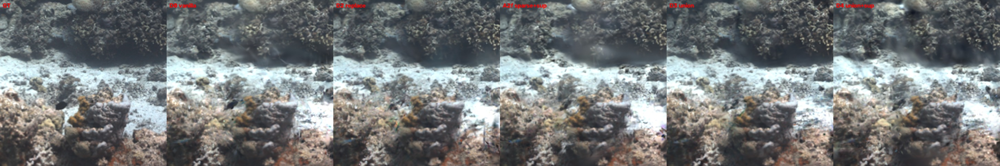

研究目标
把"建图多快算快"变成一个可优化的指标。
水下视频不依赖离线 COLMAP，能否在可接受时间内建成质量达标的 3DGS 地图？瓶颈到底在哪？
把它定义成可优化的指标 Time-to-Map：T_map@Q = 在质量门控 （PSNR_u8 ≥ 24 且 锐度保持 retention ≥ 0.15）下，从水下视频到可用地图的最短时间。 锐度 retention = 渲染图与真值图的 Laplacian 方差中位比（衡量高频几何细节存留）。
系统：双输出模型用在哪里
整条管线不需要离线 COLMAP：初始化、尺度、压缩调度全部由双输出模型的深度分支承担。
逐帧深度按米制系数反投影成点云，直接追加进持久高斯地图——免 COLMAP 的浑水初始化， 这是整条在线管线能跑起来的前提。
全局单参数定标 s_d = median(z/z_direct)（33 万深度观测，全程无真值参与）， 把任意尺度的轨迹一步拉回米制——离线 SfM 给不了的东西。
深度的多视角一致性 = 逐高斯置信度，用它门控 densify： −20% 高斯 / +15% 渲染 FPS，质量持平（压缩细节已收入 E-09 报告）。
主结果 ①：我们 vs SfM
coral 浑水全序列（889 训练 + 128 评测）vs SfM 离线参照（E-2026-1007-05）。
| 配置 | PSNR_u8 | Lap | 高斯数 |
|---|---|---|---|
| 我们 · E-2026-1007-05（全序列 150k 步） | 31.66 | 10.56 | 833k |
| SfM 参照（offline batch） | 27.57 | 12.61 | 912k |
在线 vs 离线：Time-to-Map 的账
不是刷离线质量榜——在线系统赢在时间轴、米制、鲁棒与可控性。
| 维度 | 在线增量（本项目） | 离线参照 |
|---|---|---|
| 首个达标地图 T@0.15 | 698 s（采集即建，边走边出图） | 须全量数据到齐：COLMAP 数小时 + 训练 ~20 min |
| PSNR_u8 | 26.16（推荐档）/ 26.41（conf 门控） | 26.46（batch 上限）/ ≈26.8（经典 COLMAP 管线） |
| 锐度 retention | 0.243（推荐档）/ 0.337（高预算档） | 0.426（batch）——诚实差距，机理见第五节 |
| 地图大小 / 渲染速度 | 1.20M 高斯，240 FPS（L2，−20%/+15% 实测） | 1.50M，210 FPS（同口径） |
| 米制（GT-free） | ✅ ATE 0.578 m（−65.5%） | ❌ COLMAP 无绝对尺度（SE3-ATE 1.676 m） |
| 浑水鲁棒性 | ✅ 免 SfM（初始化来自深度反投影） | SfM 易碎：该序列 1529 帧仅 505 帧注册为单组件 |
| 预算可调 | 阶梯即旋钮（0.038→0.337，随时停） | 固定 30k 全量 |
优势一句话：不是渲染质量超过离线——PSNR 打平（99%），锐度有结构性差距； 赢在时间轴（采集即建 vs 到齐再建）、米制（离线 COLMAP 给不了）、浑水鲁棒 （免 SfM）、预算可控、地图更紧凑。

结论与边界
三条可复述的结论，和一条不越界的措辞。
① 在线增量 3DGS 的质量一阶杠杆是优化预算；位姿等级是预算解锁后的第二瓶颈。 ② 双输出模型的正确用法 = 几何初始化桥 + 表示压缩调度器 + 米制源（外加 J 的外观紧凑化）， 而非画质提升。③ 增量 → batch 存在 ~0.06 的结构性锐度税，事后不可恢复—— 这是在线 3DGS 系统设计的方向性约束。
在 DIRECT D-init + 在线位姿 + 增量 3DGS 条件下，系统地测得优化预算是早期地图质量的一阶因素； 位姿质量在预算提升后成为进一步限制因素；若干直觉上的 depth/fusion/densification 调整未显示同量级收益。（不声称"解决了水下 3DGS 核心难点"。）
诚实条目：主结论在 coral（170 帧，单场景）；AQUALOC 复现预算-响应趋势 （441 帧）。在线建图为 near-online（170 帧约 15 分钟），非 real-time。 置信度门控与全窗的差异属边缘量级。更早口径的数字已退役，本页不引用。